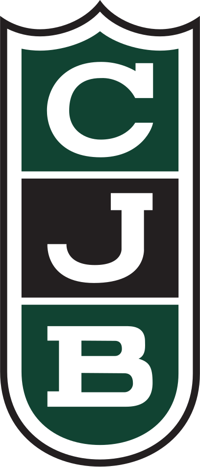
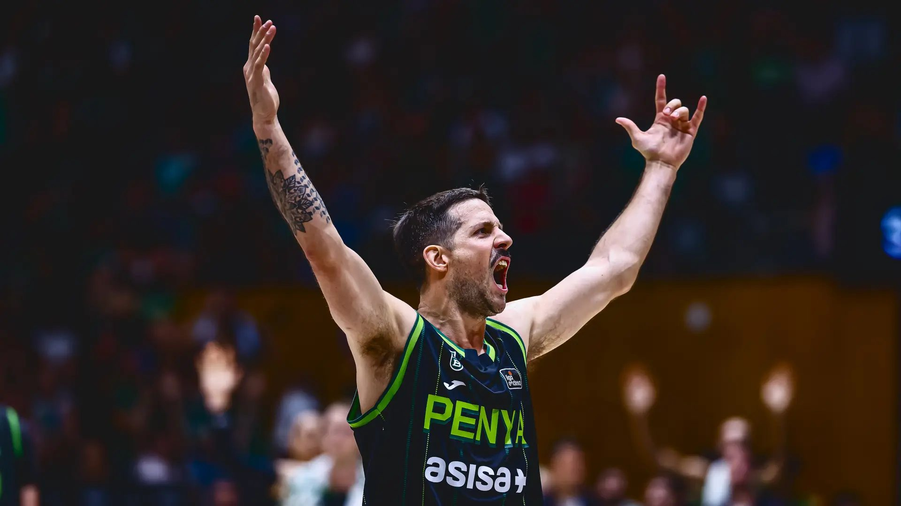
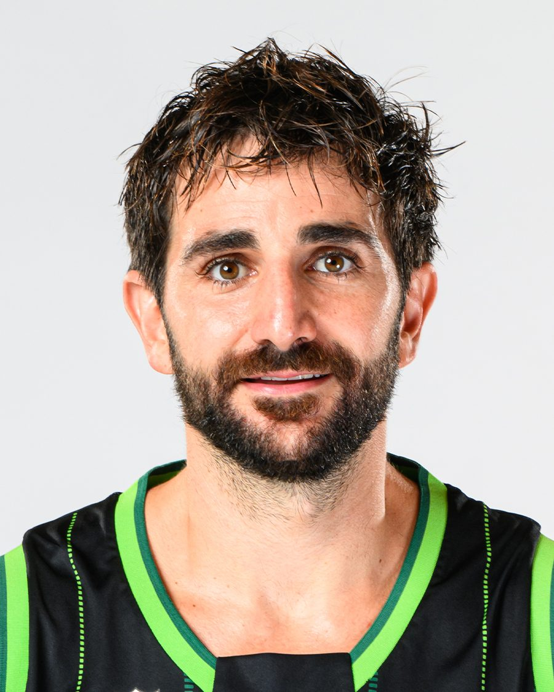

Una planta en forma de gota que s'obre cap a la ciutat amb una gran escalinata, sortides radials al voltant de la façana, la graderia blanca abraçant la pista i una coberta de voltes paral·leles. Treu-li la coberta i mira-la per dins: l'Olímpic és arquitectura premiada i és, sobretot, casa nostra.
Siguis on siguis, ets de la Penya. A la grada de l'Olímpic cada partit o des de l'altra punta del món: tria com vols formar part del club.
Per a qui viu la Penya cada setmana, des de la grada.
Per als penyistes que viuen fora de Badalona i volen seguir sent-ne part. Una quota solidària que suma per al club i per a la Fundació.